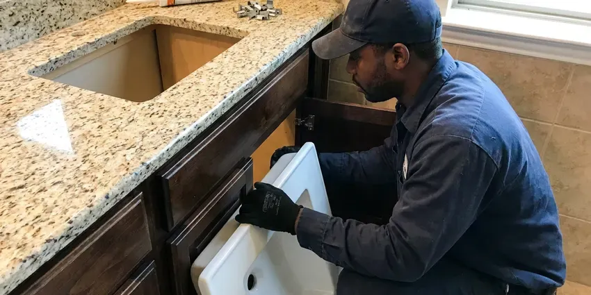

Toilet Replacement in Rapid Valley, SD
Flat-price toilet replacement in Rapid Valley, SD, with removal and disposal included.
- No Hidden Fees
- WaterSense Models
- Guaranteed Install
- Upfront Pricing

Same-Day Toilet Replacement in Rapid Valley, SD
The flange and subfloor get checked on every swap.
Local Toilet Replacement in Rapid Valley, SD
HWR Plumbing recommends toilets by how they flush, not by markup, and we point you to models with a 3 inch flush valve and a MaP score that keeps double flushes rare. Builder-grade can be fine. Premium one-piece toilets make sense for some bathrooms, and we will say which category fits yours.
Work we handle every week:
- Residential and commercial toilet replacement
- Install gravity, pressure-assist and dual-flush toilet
- Supply and drain connections that meet code

Additional Bathroom Plumbing Services in Rapid Valley, SD
From toilets to showers, our bathroom plumbing team in Rapid Valley, SD handles repairs, installs, and upgrades with tidy, code-compliant work.


Customers
Why Choose HWR Plumbing for Toilet Replacement in Rapid Valley, SD?
We give straight advice on models, from dependable builder-grade toilets to one-piece units, based on how many people use the bathroom and how often it clogs now. That keeps you from overspending. Some households need a stronger flush more than a nicer look.
- Code Knowledge, Every swap follows local plumbing code for the connections and mounting.
- Hidden Issue Check, We inspect the flange and subfloor before the new toilet goes down.
- Honest Advice, We recommend models by how they flush, not markup.
Citywide Coverage
Suburbs and nearby towns around Rapid Valley get the same service and the same price list, with no extra trip charge for most addresses we cover. Farther homes may get a wider window. We will tell you the window up front.
Experienced Team
Our plumbers have pulled toilets set on everything from lead closet bends to cast iron flanges and modern PVC, and they know how to get an old bowl off without cracking the tile around it. That experience matters most at the flange. Most surprises are things they have seen before.
Safety-First Approach
Sewer gas is the hazard people forget, so the open drain gets plugged with a rag the moment the old toilet comes up and stays plugged until the new seal goes on. Gloves stay on. We disinfect the flange area before setting the new seal.
Trusted Certified Rapid Valley Plumbing Services Professionals
At HWR Plumbing, we take pride in licensed, certified plumbing services throughout Rapid Valley, SD. Credentials matter in this trade. Every repair, install and maintenance visit follows strict safety and quality rules, and the plumbers doing the work carry recognized industry credentials.
Call Us Now PHCC Plumbing Contractor Recognition
PHCC Plumbing Contractor Recognition Better Business Bureau (BBB) Accreditation
Better Business Bureau (BBB) Accreditation Angi Certified Pro
Angi Certified Pro ISO 9001 Quality Management Certification
ISO 9001 Quality Management CertificationWhat a Toilet Replacement Covers in Rapid Valley, SD
Toilet Replacement Cost Comparison in Rapid Valley, SD
Three repair calls in a year on the same toilet usually cost more than replacing it, especially when the toilet is old enough to waste water on every flush. We put both numbers side by side. You make the call, and we do not push replacement on a toilet that only needs a flapper.

High-Efficiency Toilet (HET) Upgrades in Rapid Valley, SD
High-efficiency toilets carry a WaterSense label and a MaP score, which tells you how many grams of waste the toilet clears in one flush. Look for 800 or higher. A high score means fewer double flushes and fewer clogs, and that is where the real water savings come from.
Toilet Brands We Replace in Rapid Valley
Brand matters less than model, because every major maker sells a great toilet and a mediocre one at nearly the same price. Our picks come down to flush valve size and the MaP score. Parts availability counts too. A toilet with proprietary parts can turn a simple repair into a special order later.
Comfort-Height Toilet Replacement in Rapid Valley
Going from a standard bowl to a comfort-height model raises the seat two or three inches, which matters a lot for seniors and anyone recovering from knee or hip surgery. The drain location stays the same. If there is room, a grab bar beside it helps too, and we can anchor that into a stud during the same visit.
Rental and Multi-Unit Toilet Replacement in Rapid Valley, SD
Landlords with several units do better standardizing on one toilet model with common parts, because the next flapper or fill valve is then the same part in every unit. We can replace several toilets in one visit. Tenants keep a working bathroom. We coordinate entry directly with them, so you do not have to be there.
ADA and Commercial Toilet Replacement in Rapid Valley, SD
Public restrooms need bowls rated for heavy use, and many need to meet ADA height and clearance rules when a fixture is replaced. Clearances get checked before we order anything. Sensor flush valves are an easy add during the swap, and they cut down on unflushed bowls.
Choosing a Toilet Brand in Rapid Valley, SD
Kohler, American Standard, TOTO, Gerber and Mansfield all make solid toilets, and each line has a few models we steer people away from because of weak flushes or hard-to-find parts. You get our honest take on which models to skip. What fits your bathroom comes down to rough-in and bowl shape, and we check both before you buy.

What a Standard Swap Includes in Rapid Valley
The swap itself runs about two hours: water off, tank drained, old toilet out, flange scraped and inspected, new toilet set on a fresh seal, and a braided stainless supply line connected. Then the leveling. The base gets caulked, with a small gap left at the back so any future leak shows up instead of hiding under the floor.
Nearby Toilet Replacement in Rapid Valley, SD
Calls get answered by a person who asks the questions that matter for a toilet swap, like the rough-in, the seat height, the bowl shape you want and whether there is a second bathroom. Those answers set the schedule. Homes with one toilet get moved up the list.
A local plumber knows that Rapid Valley houses built before the 1990s often have a cast iron flange under the toilet, and those can be rusted thin by the time the toilet comes off. We bring repair rings for that. The flange gets handled on the same visit.
HWR Plumbing at a Glance
- Fully licensed plumbing team covering Rapid Valley, SD
- Same-day appointments and 24/7 emergency response
- Clear written estimates, no hidden fees
- 4.8-star rated by 304+ South Dakota customers
Rapid Valley Map
Rapid Valley Information
- Population
- 8,098
- Area codes
- Local
- Service area
- Rapid Valley and towns within a 40 mile drive
- Nearby
- Box Elder, Rapid City, Sturgis, Spearfish
Swapping an old toilet in Rapid Valley, SD for a WaterSense model is one of the simplest ways to cut household water use and lower the monthly bill.
Talk to a Plumber
Call HWR Plumbing for reliable plumbing work done by licensed pros in Rapid Valley, SD.
Our Specialized Plumbing Services in Rapid Valley, SD
At HWR Plumbing, you get every kind of plumbing service from one company across Rapid Valley, SD. We go from leak detection all the way to full system installations, for homes and commercial buildings, and we do it quickly at a fair price. Here are the core services we offer:


What to Expect From a Toilet Swap in Rapid Valley, SD
At HWR Plumbing, every toilet replacement runs the same way so nothing gets skipped.
Schedule the Swap
Reach us at (605) 480-9736. We find a time that suits you and confirm the price.
Remove the Old Toilet
We shut off the water, empty the tank and pull the old toilet and protect the floor.
Set the New One
The new toilet goes on a fresh seal and new closet bolts, then we check for leaks and a strong flush.
Frequently Asked Questions About Toilet Replacement in Rapid Valley
A standard toilet replacement usually runs $400 to $800 with the new toilet and labor included, depending mostly on the model you choose. Flange or subfloor repairs add to it. We quote those separately before doing them, so the base number does not move.
About two hours for a standard swap. In that time we remove the old toilet, inspect the flange, set the new one and test it, with the old fixture loaded on the truck at the end. Flange repairs add time.
A handle that needs jiggling, a tank that refills on its own, a hiss after the flush or a flush that stops halfway all point to worn tank parts. Those can be replaced one at a time. Once a toilet is 25 years old, a full replacement usually beats rebuilding it.
Mineral scale builds up quickly in water heaters, faucet aerators and fixtures here, so a softening system is a common upgrade for homeowners. Hard water leaves calcium scale in the rim jets and on the flush valve seat, which slowly weakens the flush and makes flappers leak. A fully glazed trapway resists scale better. We recommend models with fully glazed trapways and simple fill valves.
Yes. Removal and disposal of the old toilet and all packaging are in the price.
A like-for-like replacement in the same spot generally does not. Moving drains or adding a bathroom usually does.
Plan on two to four hours if the flange or subfloor needs work, and closer to two for a clean swap with a solid flange. You will have a working toilet the same day. Testing happens before we pack up.
In most cases, yes. We measure the rough-in, usually 12 inches, and check the footprint so the new toilet covers old caulk lines and floor stains. A wider base hides more of the old outline.
Hear From Customers Who Hired Our Plumbing Experts

Jessica T.
We were adding a gas range in a kitchen remodel and needed a new line run from the meter. The plumber pulled the permit, ran the pipe through the crawl space, and had it inspected and approved within the week.
Gas Line Repair · Pierre, SD
Nathan E.
Our tankless heater kept throwing an error code and shutting off mid shower. The tech flushed the heat exchanger, which was full of scale, and replaced a bad flow sensor. Hot water has been steady for half a year now.
Water Heater Repair · Rapid City, SD
James P.
Our restaurant had a slow leak at the hand sink that was rotting the cabinet base. HWR Plumbing came in at six in the morning before prep, replaced the trap and both supply lines, and was packed up before my first cook clocked in.
Commercial Plumbing · Spearfish, SD
Rachel N.
Hard water was leaving white crust on every faucet and our dishwasher was struggling. The tech tested the water, recommended a softener sized for a family of five, and installed it with a bypass valve in one afternoon. The spots on our glasses are gone.
Water Softener · Rapid Valley, SDLaura S.
Our 40 gallon tank started leaking from the bottom after thirteen years. The tech hauled the old one out, set a new unit with a fresh expansion tank, and had hot water running in about four hours. He took the old tank with him too.
Water Heater Replacement · Sturgis, SDLisa C.
Water was pouring out from under the washing machine on a holiday weekend. HWR Plumbing talked me through closing the valves over the phone and had a plumber at the house within ninety minutes. It was a burst fill hose.
Emergency Plumbing · Belle Fourche, SD